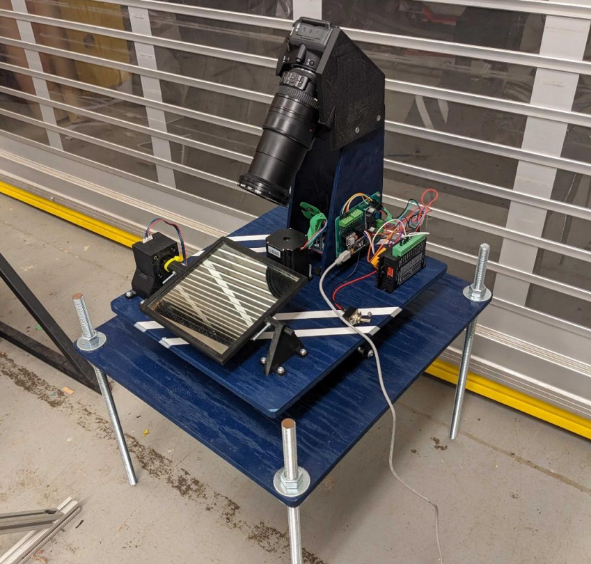

Work

SAM M10Q GPS Board
GPS-on-module daughter board for flight navigation and recovery, separated from the comms stack to keep RF clean.

Power Module
ORed 24V power with buck conversion to 3.3V and 5V. Found a zener shunt bug during bring-up.

Control and Sensor Modules
ESP32 upper and STM32 lower control boards for valve actuation and pressure transducer reads, connected by a 6-pin Molex Nano-Fit cable.

Ground Station
Greg: handheld ground station for live telemetry decode and GPS recovery tracking.

Avionics Firmware and Protocols
Shared firmware libraries (av-libraries) with locked-down CAN protocol, heartbeat monitoring, and telemetry forwarding.

Sunflower Tracking System
Camera tracker that locks onto a rocket using YOLOv8 and dual-axis PID. 2nd place at Launch Canada.

LiteLM: On-Device LLM Inference
GPT-2 inference on Kria KV260 with AXI4 DMA and custom kernel drivers. 3rd place at Queen's ECE Showcase.